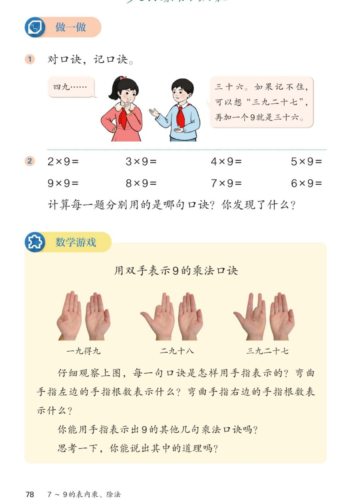

🔊 五、7~9 的表内乘、除法 · 课本第 78 页 · 做一做与数学游戏
人教版《数学》二年级上册 · 有声图文带读 · 先想后看解析 · 对口诀 · 手指游戏
题数
6
认知
2
强化
3
拓展
1
本页重点
对口诀记口诀 · 用双手表示9的口诀
🎧 分两步学：
① 解析教材图片
——纯声音读图，读到哪一块哪一块闪动提示；关键处先倒计时让你思考，再在图片下方给出解析并朗读。
② 分层提问练习
——六道分层题（认知 / 强化 / 拓展），先思考再展开解析、朗读参考答案；这一步不再回到图片。
也可以随时点任意一句话、图上任意一块单独听；点课本文字卡还会展开答案。
教材图片（点块听读，读到哪块哪块闪）

📖 人教版《数学》二年级上册 · 课本第 78 页 · 图片仅供个人学习，版权归人民教育出版社所有
🤔 想一想（点我可跳过）
课本的文字（点句子：听读 + 看答案）
记口诀
记不住时怎么想？
看答案 ▾
想
三九二十七
，27+9=
36
，就是四九三十六；
也可以想熟的那句，
加 9 或减 9
推出来；
💡 相邻两句口诀的得数相差 9
第②题
8 道算式与发现
看答案 ▾
2×9=
18
，3×9=
27
，4×9=
36
，5×9=
45
；
9×9=
81
，8×9=
72
，7×9=
63
，6×9=
54
；
发现：相邻两句口诀得数
相差 9
；一句口诀算两道算式；
💡 得数个位加1、十位减1，正好凑成 9
手指游戏
怎样用双手表示 9 的口诀？
看答案 ▾
弯下第
几
根手指，表示
几九
；
弯曲手指
左边
根数 → 积的
十位
；
弯曲手指
右边
根数 → 积的
个位
；
例：弯第 2 根 → 左 1 右 8 →
18
；弯第 3 根 → 左 2 右 7 →
27
；
💡 两只手就是一台 9 的口诀计算器
道理
为什么手指能算 9 的口诀？
看答案 ▾
几个 9 =
几个十减几
；
弯第 3 根：3 个 9 = 30−3 =
27
；
左边 2 根是 2 个十，右边 7 根是 7 个一，合起来 27；
💡 手指正好做了这个减法
分层提问练习（先想后看解析）
💬
认知
对口诀：四九得多少？
看解析
🤔 想一想
解析：
四九
三十六
；
想三九二十七，27+9=
36
。
✖️
认知
8×9 和 7×9 各等于多少？
看解析
🤔 想一想
解析：
8×9=
72
，口诀
八九七十二
；
7×9=
63
，口诀
七九六十三
。
🧠
强化
记不住六九得多少，可以怎么想？
看解析
🤔 想一想
解析：
想五九四十五，45+9=
54
；
想七九六十三，63−9=54；
6 个 9 = 60−6 =
54
。
✋
强化
用手指表示六九五十四，应弯下第几根？左边几根、右边几根？
看解析
🤔 想一想
解析：
弯下第
6
根手指；
左边
5
根 → 5 个十；右边
4
根 → 4 个一；
💡 合起来正好 54
🔍
强化
第 2 题的 8 道算式里，你发现了什么规律？
看解析
🤔 想一想
解析：
相邻两句口诀的得数
相差 9
；
一句口诀算
两道算式
：2×9 和 9×2 都用二九十八；
💡 9×9 例外，只有一道
🌈
拓展
为什么弯下第几根手指，左边的根数正好是十位？
看解析
🤔 想一想
解析：
几个 9 =
几个十减几
；
弯第 n 根，左边 n−1 根是十位，右边 10−n 根是个位；
🌈 手指把 9×n 变成了 10n−n 的减法
① 解析教材图片
② 分层提问练习
⏹ 停止
纯声音 + 高亮跟随 · 想好才出解析
← 返回导航